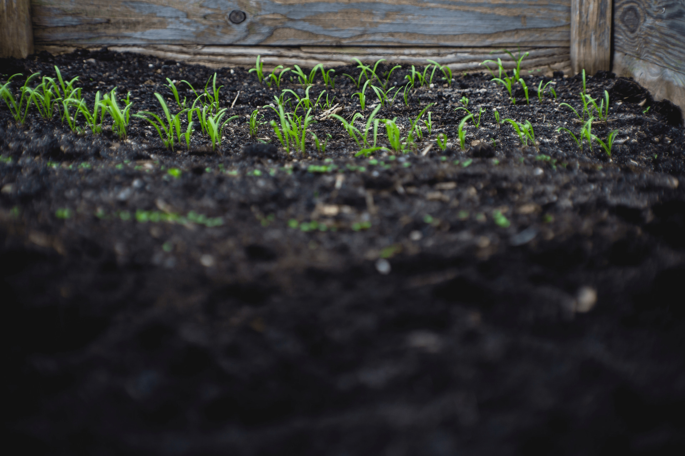

Məhsullar


Biz kimik?
Əslində hər şey illər əvvəl İsmayıllı rayonunda ailəvi gəzintidə olduğumuz zaman baş verdi. İsmayıllı rayonunun füsunkar təbiətinin gözəlliyi bizim bir gün burda kənd təsərufatı ilə məşqul olmaq arzusunu oyatdı. Daha sonra dostlarımızla bu məsələni müzakirə edərək İsmayıllıda təsəruffat qurmağa qərar verdik.
Böyük uğurlar vaxtında və yerində verilən qərarlarla çox bağlıdır.
Elə bizdə ilk səfərdə qərar verdik və başladıq.İllər çox serətli keçdi.Bizdə böyümədə zamanın sürətindən geri qalmadıq.Qısa zaman müddətində əldə etdiyimiz uğurlar və daha sürətlə böyüməyə davam etməyimiz işimizə olan sevginin göstəricisidir.
Alma,armud,nektarin,gavalı,gilas və qoz yetişdirməklə qalmadıq,tingçilik və toxumçuluqla məhsul sıramızı genişləndirdik.
qısa zamanda ən son texnoloji yeniliklərlə damla suvarma sistemlərinin qurulması BAĞLARIN layihələndirilməsi,salınması kimi çətin işlərin ödəsindən uğurla gəldik.
2022 ci ildə əsas hədəfimiz brendimizin "made in AZERBAİJAN" adına layiq ölkə kənarında rəflərdə görünməsidir.
növbəti hədəfləri sizlərlə paylaşmaq arzusuyla.
hörmətlə
MELADORA kollektivi
Elə bizdə ilk səfərdə qərar verdik və başladıq.İllər çox serətli keçdi.Bizdə böyümədə zamanın sürətindən geri qalmadıq.Qısa zaman müddətində əldə etdiyimiz uğurlar və daha sürətlə böyüməyə davam etməyimiz işimizə olan sevginin göstəricisidir.
Alma,armud,nektarin,gavalı,gilas və qoz yetişdirməklə qalmadıq,tingçilik və toxumçuluqla məhsul sıramızı genişləndirdik.
qısa zamanda ən son texnoloji yeniliklərlə damla suvarma sistemlərinin qurulması BAĞLARIN layihələndirilməsi,salınması kimi çətin işlərin ödəsindən uğurla gəldik.
2022 ci ildə əsas hədəfimiz brendimizin "made in AZERBAİJAN" adına layiq ölkə kənarında rəflərdə görünməsidir.
növbəti hədəfləri sizlərlə paylaşmaq arzusuyla.
hörmətlə
MELADORA kollektivi

Organik

Məmnuniyyət

Yüksək keyfiyyət
Xəbərlər